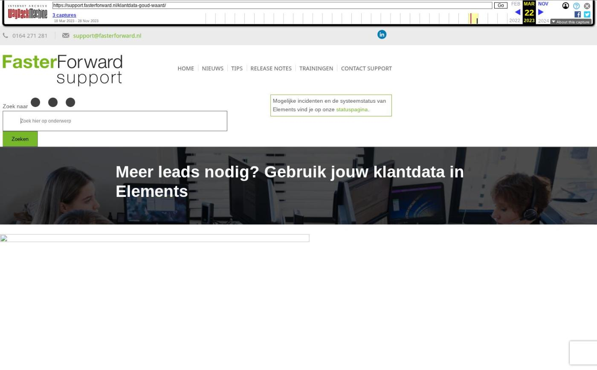

Verbeterde verwerking van grote e-mailvolumes via Office 365 en voorbereiding HDN

Tekstinhoud
Op woensdag 19 november zijn Elements en eBlinqx weer verbeterd en uitgebreid met nieuwe features. Deze release bevat een verbeterde verwerking van grote e-mailvolumes via Office 365 en voorbereidingen HDN.
Verbeterde verwerking van grote e-mailvolumes via Office 365
Afscheid van HDN certificaten
Vragen stellen aan Quinn
Overige verbeterpunten
Verbeterde verwerking van grote e-mailvolumes via Office 365
Vanaf nu worden grote aantallen e-mails die via Office 365 worden verzonden automatisch in een wachtrij geplaatst. Dit geldt bijvoorbeeld bij het bulk verzenden van facturen vanuit het facturenoverzicht of bij het versturen van campagnes. Hier lees je er meer over.
Dankzij deze wijziging worden alle e-mails succesvol verwerkt en niet meer geblokkeerd door API-limieten van Office 365. Voorheen werd een bulk aan e-mails bij verzenden via Office 365 wel tegengehouden door deze limieten.
E-mails die in de wachtrij staan, zijn zichtbaar in de e-mailmodule onder de map 'Verzenden mislukt'. In een paarse balk wordt aangegeven wanneer de e-mail automatisch opnieuw wordt verzonden. Deze hoef je niet zelf (opnieuw) te versturen.
Let op: indien er e-mails in de wachtrij staan dan wordt de e-mailbox waaruit de e-mails zijn verstuurd automatisch tijdelijk geblokkeerd. Het is dan tijdelijk niet meer mogelijk om vanuit deze e-mailbox mails op te halen. Je kunt nog wel e-mails versturen, maar deze komen óók in de wachtrij te staan en worden niet direct verstuurd.
Afscheid van HDN certificaten
HDN neemt afscheid van de HDN certificaten per 1 december. In eBlinqx en Elements hebben we de voorbereidingen hiervoor getroffen, zodat we goed voorbereid zijn op deze overgang. Wanneer je één certificaat hebt in eBlinqx/Elements dan hoef je zelf niets te doen in eBlinqx/Elements. Wij nemen contact op met de kantoren die meerdere certificaten hebben en werken met een hoofdcertificaat.
Vragen stellen aan Quinn
Quinn is nu beschikbaar voor iedereen! Quinn is onze virtuele helpdeskmedewerker waaraan je vragen kunt stellen over eBlinqx. Door middel van AI zal Quinn de vragen zo goed mogelijk proberen te beantwoorden. Quinn is te benaderen via eBlinqx en de supportpagina door middel van het gesprekswolkje. Hier lees je meer over Quinn.
Overige verbeterpunten
Aan de rapportage CRM – Dossiers met natuurlijke personen zijn de kolommen 'Nationaliteit eerste persoon' en 'Nationaliteit tweede persoon' toegevoegd. Zet via Rapportage beheer de kolommen aan om deze in te zien
De foutmeldingen die kunnen ontstaan in de koppeling met zkr. zijn verduidelijkt. Zo is beter te zien waarom de verificatie en/of controle is mislukt. Daarnaast wordt de foutmelding duidelijker weergegeven in het dossier
Het hypotheeknummer in de hypotheekproductkaart wordt nu niet meer overschreven wanneer er een aanvraag bankgarantie of zakelijk inkomen is gedaan vanuit het dossier. Voorheen werd het hypotheeknummer overschreven door een nummer die meegestuurd werd in het OX bericht van de bankgarantie/zakelijk inkomen
In de rapportage Management – Hypotheekaanvraag niet FTR en grafiek FTR: Afgekeurde stukken per maand in managementinformatie wordt er nu rekening gehouden met verwijderde stukken. Op deze manier krijg je een volledig beeld
Geplaatst op 14 november 2025 (Laatste update: 19 november 2025)
Laatste 5 releasenotes
Gemakkelijk data en documenten vergelijken »
Verbeteringen boekhouding en facturatie »
Verbeteringen gespreksopname en onder de motorkap »
Verbeteringen onder de motorkap en gespreksopnames »
HDN release: afscheid van HDN certificaten »